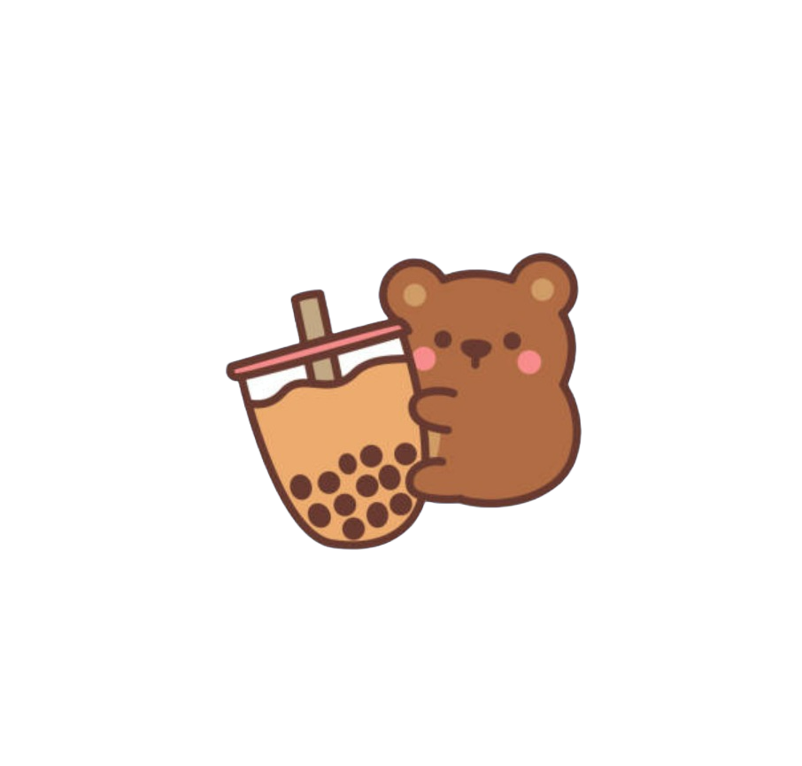

Welcome to Jungle John and the Tiger Temple!
Please read the following directions before beginning
- You will be playing as Jungle John's assistant.
- Throughout this story there will be 2 types of questions. Skill and Story Questions
- Skill questions will test your knowledge of math skills taught throughout the story. Coins will be reduced for every wrong mistake, so try your best! If you need help make sure to click the lesson linked to the questions
- Story questions will change the route of the story leading to different outcomes and potentially different endings
- Have fun!

Click to begin